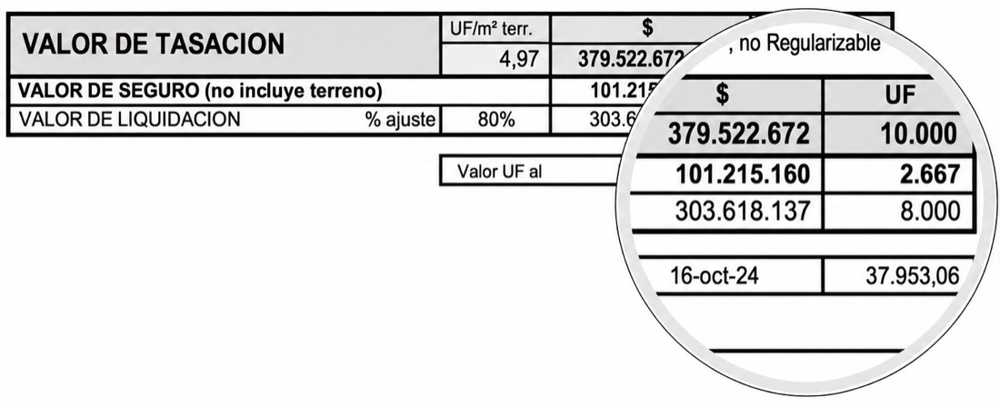

No te explican de dónde salen los intereses
En Pulso Inversor: cada pago de intereses está ligado a una operación concreta y queda escrito en el contrato que revisas antes de firmar.
Pulso Inversor no requiere certificación CMF bajo esta estructura privada, contractual y personalizada. No opera como banco, corredora, administradora de fondos ni plataforma de financiamiento colectivo regulada.
Pulso Inversor es una compañía especializada en ingeniería financiera y estructuración de inversiones alternativas respaldadas por activos reales.
Conectamos a inversionistas que buscan rentabilizar su capital con personas y empresas que requieren soluciones financieras, diseñando operaciones que integran rentabilidad, garantías y oportunidades de desarrollo patrimonial.
Tu respaldo está en los documentos que firmas. Por eso, aquí te damos lo necesario para revisarnos por tu cuenta.
En Pulso Inversor: cada pago de intereses está ligado a una operación concreta y queda escrito en el contrato que revisas antes de firmar.
En Pulso Inversor: te mostramos una operación real, con la propiedad, su tasación y su precio de compra.
En Pulso Inversor: no te pedimos decidir en la reunión. Te llevas los documentos y lo piensas con calma.
Cada operación tiene su ficha. Con este ejemplo ilustrativo te mostramos qué mirar en cada dato antes de invertir.

Ejemplo ilustrativo para mostrarte cómo leer una ficha. Los datos no corresponden a una operación real.
Pide los certificados al Conservador de Bienes Raíces que corresponda, compara la tasación con propiedades parecidas y lleva los documentos a tu abogado antes de firmar.
En toda inversión pueden surgir imprevistos. Lo importante es saber desde antes qué se hace en cada caso, y que quede por escrito.
Cada operación tiene definido qué se hace según su documento: acciones de cobro con el pagaré, venta voluntaria o ejecución de la hipoteca, o exigir la recompra cuando la propiedad está a tu nombre.
Puedes retirar tu capital antes del plazo cuando inviertes con pagaré. En ese caso se aplican las condiciones de tu contrato de mutuo.
Pulso Inversor se hace responsable de sanear cualquier gravamen sobre el inmueble y cualquier uso indebido de él, ejerciendo los derechos y las garantías de los inversionistas.
Sin intermediarios ni nombres de fantasía. Estos son nuestros datos para que los compruebes, y la invitación a reunirnos.